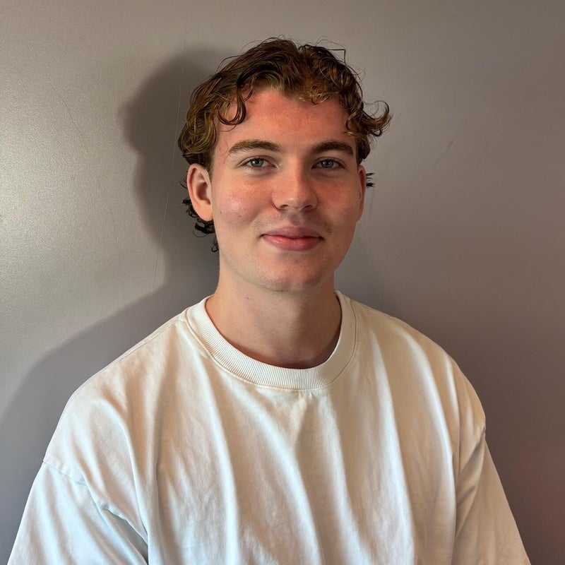

Medewerker · Beleggen
Joaquim van der Vorst
Maak kennis met Joaquim van der Vorst en ontdek waar hij bij Novi Future Finance aan werkt.

Persoonlijk financieel advies
Expertise: Beleggen
Diploma: WFT-Basis
Over Joaquim
Als duurzaam financieel adviseur help ik starters om met vertrouwen te beginnen met beleggen. Beleggen voelt voor veel mensen spannend en ingewikkeld. Daarom ga ik rustig te werk. Ik leg stap voor stap uit wat de mogelijkheden zijn, wat ze kosten en welke risico's erbij horen, in gewone taal en zonder jargon of verkooppraatjes.
Ik begin altijd bij jou: wat wil je bereiken, hoeveel tijd heb je en hoeveel risico past bij je? Op basis daarvan geef ik advies dat je zelf kunt begrijpen en nalopen. Ik ben eerlijk over wat ik niet weet en over wat niemand kan voorspellen.
Duurzaamheid is voor mij een vast onderdeel van elk advies. Ik bespreek wat jij belangrijk vindt en wat dat betekent voor je keuzes. Zo maak je keuzes waar je nu en over een aantal jaren nog achter staat.
Plan een persoonlijk gesprek← Terug naar medewerkers